费曼观察圆盘
二战结束后，费曼在康奈尔食堂看到一个被抛向空中的餐盘：盘子一边自转（spin），它的转轴一边在空中微微摇晃（wobble，即进动）。纯粹为了好玩，费曼推导了它的运动方程，发现了一个漂亮的整数关系——当摇晃角很小时，盘子摇晃（进动）的频率，恰好是它自转频率的两倍。这个“2”来自一个简单的几何事实：薄圆盘绕轴的转动惯量，是绕直径的两倍。
一、受力分析与模型
把盘子看成薄均匀圆盘（质量 m、半径 R），抛出后忽略空气阻力，空中只受重力 mg，作用在质心 C。对质心取矩：
重力过质心、力臂为零，所以对质心无外力矩，角动量守恒：
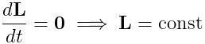
这就是“自由刚体（torque-free）”情形。取固连主轴系（ê3 沿盘面法线即对称轴，ê1、ê2 在盘面内），薄盘的转动惯量为：
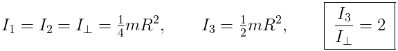
惯量张量在本体系为 diag(I⊥, I⊥, I3)。关键比值 I3/I⊥ = 2 正是最终 2:1 的来源。
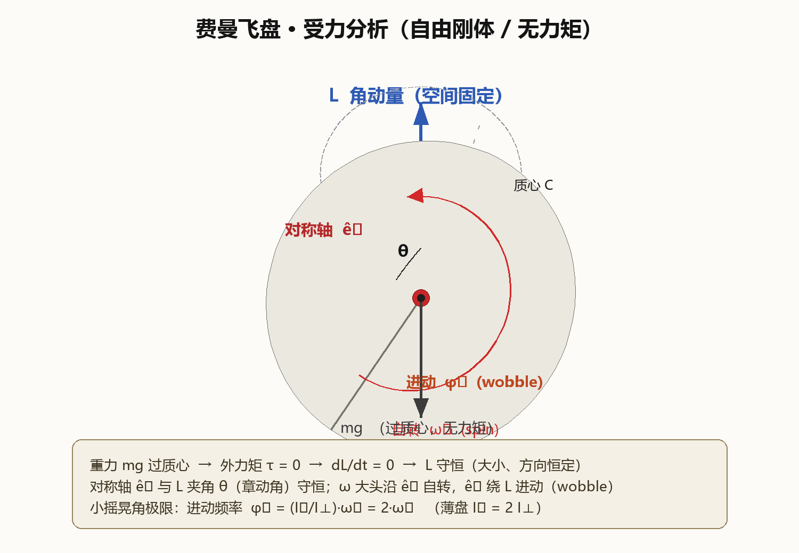
二、拉格朗日量
用欧拉角 (φ, θ, ψ)（φ 进动、θ 章动、ψ 自转）。刚体角速度在本体系的三个分量为：
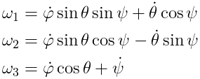
动能（无势能，V = 0）即为拉格朗日量：
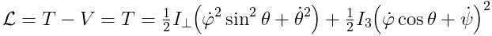
三、哈密顿量
广义动量分别为（pφ = LZ 是角动量沿空间固定轴的分量，pψ = I3ω3 = L3 是沿对称轴的分量）：
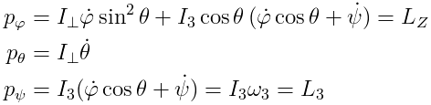
哈密顿量取对称陀螺的标准形式，数值上等于能量 T：
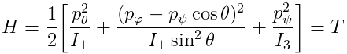
四、守恒量
无外力矩 → 角动量矢量守恒；无耗散 → 能量守恒；φ、ψ 都是循环坐标 → 对应的两个角动量分量守恒：
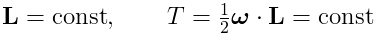
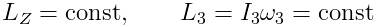
由这些守恒量进一步推出：章动角 θ、自转角速度 ω3、横向角速度 ω⊥ = √(ω12 + ω22) 都不随时间变化。
五、运动方程（欧拉方程）
刚体动力学在本体系的基本方程：
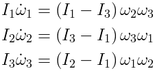
代入薄盘 I1 = I2 = I⊥、I3 = 2I⊥，得到简洁的形式：
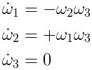
即在本体系中，角速度横向分量 (ω1, ω2) 以角频率 Ωb 绕对称轴 ê3 旋转（体锥进动）：
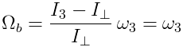
六、费曼的 2 : 1
空间系中，对称轴 ê3 绕固定角动量 L 的进动角速度为：
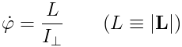
盘子的自转（绕 ê3 的角速度分量）为：
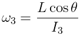
两者之比——也就是费曼关心的“摇晃（进动）频率 / 自转频率”：
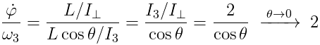
费曼 2:1 结论：薄圆盘的进动（摇晃 / wobble）频率，恰为自转（spin）频率的 2 倍。小摇晃角极限下 dφ/dt ÷ ω3 = I3/I⊥ = 2，更精确地，任意小角度下为 2/cosθ，θ → 0 时严格趋于 2。
一个容易混淆的细节：这里的“进动”（wobble）比“自转”（spin）快一倍——盘子每自转一圈，它的轴已经摇晃（进动）了两圈。这正是费曼从餐盘校徽上看到的 2:1，“2”来自薄盘 I3 = 2I⊥ 的几何事实。
七、数值模拟与三维动画
用 4 阶 Runge–Kutta 积分欧拉方程（角速度）+ 四元数姿态运动学，对整段运动做数值求解，并校验守恒律与 2:1。
参数：I⊥ = 1、I3 = 2（保持薄盘 2:1 比值）；初值 ω3 = 1.0（自转）、ω1 = 0.18·ω3（微小摇晃）、ω2 = 0。
| 数值结果 | 数值 |
|---|---|
| 自转频率 ω3 | 1.0000 rad/s（严格守恒，漂移 0） |
| 进动频率 dφ/dt | 2.0081 rad/s |
| 比值 dφ/dt ÷ ω3 | 2.0081 = 2/cos(5.14°)，θ → 0 时 → 2 |
| 角动量漂移 Δ|L| | 8.7 × 10-13 |
| 能量漂移 ΔT | 1.6 × 10-15 |
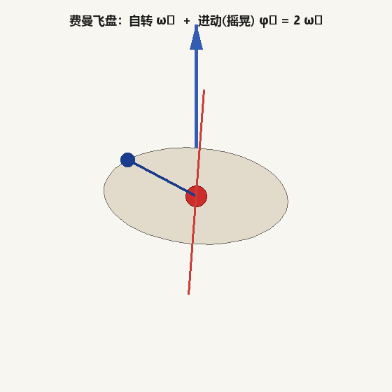
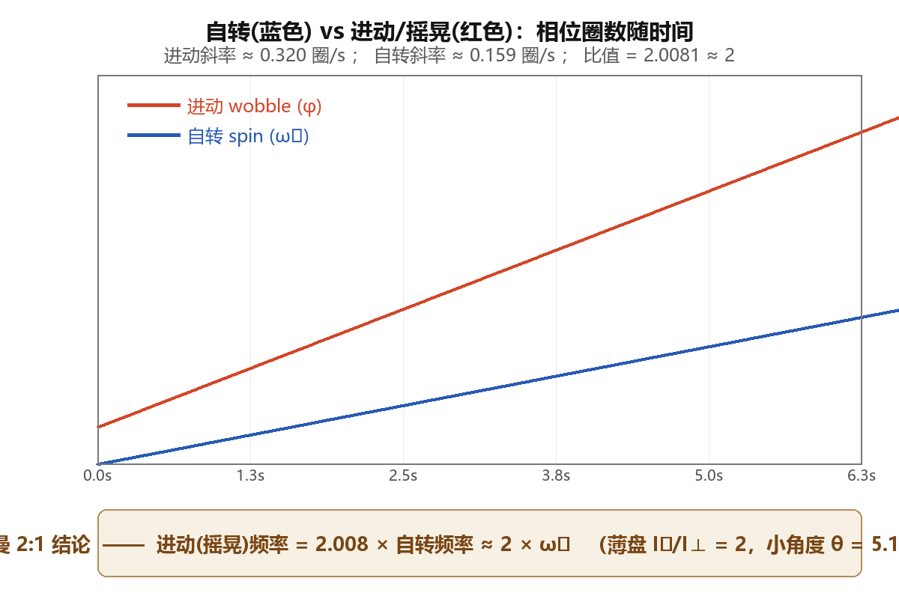
模拟与推导均用本地脚本完成：欧拉方程 + 四元数的 RK4 积分（numpy），三维动画与受力分析图由自研渲染器绘制，公式由本地 LaTeX（latex + dvipng，Latin Modern 字体）排版。